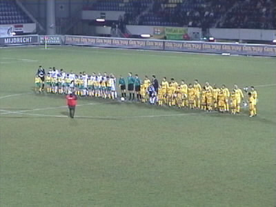
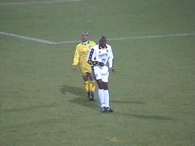

|
Fortuna Sittard - Roda JC 31 januari 2001 |
Het W&P stadion.
De spelersbus van Roda voor de hoofdingang.
De cateraar wijst trots naar een Roda-vaan.
Op weg naar vak B door de ellendige gracht. Zowel het uitvak als
het buffervak waren geheel uitverkocht.
Het uitvak en links het buffervak gevuld met Rodasupporters.

Roda JC in het witte uit-tenue.

Ook in Sittard 1 minuut stilte voor Volendam. De minuut werd
slechts verstierd door lieden uit het Fortunavak naast het buffervak
Fatih Sonkaya in vak B.
Bernard Tchoutang met een "coupe nouvelle".
Roda werd in de eerste helft overklast maar kreeg in de tweede
helft iets meer vat op de wedstrijd.
Hier kan Hesp ternauwernood redden.

De pasgetrouwde Garba Lawal met gladgeschoren schedel verving
Tom Soetaers. Achter hem staat Emeran de nieuwe verdediger van Fortuna.
Het zwaar teleurgestelde supporterslegioen van Roda hoefde deze
keer nauwelijks 10 minuten te wachten eer de poort openging.
©KPD